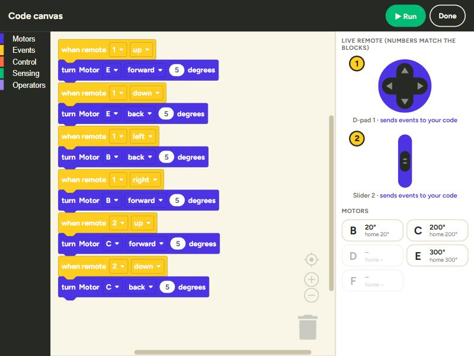

You can program your arm with blocks on the iPad. Each control on the remote has a number, and your code decides what happens when you use it: how far a motor turns, how fast, and in which direction.

Stuck? Tap the yellow ? in the app for help.
Follow these instructions to learn how to start the right program on the hub.
Step 1: Turn on the LEGO hub.